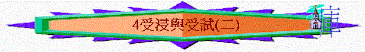

教師版
第四課：受浸與受試（下）
ｂ）為王的試驗
因主耶穌到世上來是要得國，祂本為天國的王，作王先要征服一個充滿紊亂的國，故在祂自己的性格中必須沒有紊亂的情形。為著要執掌王權，祂必要經過試驗，魔鬼建議用一個比較容易的方法來得著萬國，但被主耶穌拒絕，因祂不要用廉價得著國度，祂要順服天父的旨意來得國，要以自己的性命來作成救贖，以復活的大能勝過死亡，然後從父 神得著天上地下所有的權柄，並從父 神得到榮耀及國度。
２）受試的重點
ａ）關乎物質方面：餅的要求（生活方面），是指我們當注意屬靈的過於物質的，不可用自己的方法來逃難。
ｂ）關乎屬靈事物：信靠 神的要求（道路方面），當走在主的話語及應許上，而不可憑自己的喜好任意妄為或求自己的榮耀。
ｃ）關乎使命目標：得著國度（名利方面），當揀選十字架過於撒但所賜給的體面，不可用自己的方法來成全 神的旨意。
３）受試的過程
ａ）聖靈的引導
當主耶穌受浸後及得聖靈降在祂的身上，聖靈立刻把主耶穌催到曠野去受魔的試探，表示主耶穌受試是出於 神的旨意，不過在魔鬼的那一面是要使主犯罪。因為試探（ＴＥＭＰＴＡＴＩＯＮ）、試煉（ＴＲＡＩＬ）及試驗（ＴＥＳＴ）是不同的，分別在動機和目的上不同。 神在此時要試煉和試驗是要顯明祂作救主及王的資格。但魔鬼卻滿以為可以試探主耶穌，引誘祂違背 神的心意，使祂失卻作救主的資格，從而把人陷入萬劫不復的地步，其動機和目的都是邪惡的和毀滅性的。
聖靈把主耶穌引到曠野，為的是使主耶穌可以專心禱告對抗魔鬼，藉著祂的得勝給與人出路，因主受試是對我們是有意義的，受試是顯明主耶穌和我們一樣是真正的人，只是祂沒有犯罪，祂絕對有資格來作成救贖的工作，曾受試是使祂能體恤我們，來四：１４—１６
。因為我們在世上免不了常受魔鬼的試探，主耶穌站在人的地位上受試；成了我們得勝魔鬼的根據，我們可以藉遵守 神的話而得勝，主耶穌成了信徒的榜樣。另方面，我們知道我們所受的試探都是我們所能忍受並且能得勝的，林前十一：１３。
ｂ）變石頭成餅
主耶穌不是只受了魔鬼三樣的試探，而是四十晝夜不住的受魔鬼試探，魔鬼一直在尋隙攻擊主耶穌。「日子滿了」在一般來說是開始放鬆及失去警覺時刻，「就餓了」是主耶穌表示主耶穌真是以人的身份來面對魔鬼，因祂是真實的感到飢餓，禁食四十晝夜是一點食物也沒有喫。魔鬼是在主耶穌肉身上最逼切需要及渴慕得著滿足之時，也為身心靈最疲乏之時，魔鬼進前來用最詭詐之法來試探主耶穌，但主耶穌未有放鬆對魔鬼的防備，反倒是得勝到底。
「若是」在希臘文中有兩個字，一是用於懸擬情體，是作「假若」之用，另一個是用於指實情體，是條件的「既是」。此處的「若是」是指實情體，故作「既是」之用。表示主既是兒子，就不應受苦，可以將石頭（只是一塊）變成食物，參路四：
３。這樣是使主耶穌用 神的權能來滿足自己的需要，這樣作可以使主不站在人的地位上，那麼主耶穌就沒有資格來代替人。
魔鬼常用使人失去原則，牠或會使用合理的事或理由來試探人，鼓勵人體貼肉體的需要，以致人把 神的心意及原則放棄。我們今天雖然不能把餅變成石頭，但我們卻會把我們的立場、心志、持守及 神的旨意變更，成了背道的信徒。
主耶穌勝過的方法認識自己的生命及人生目的，人活著是需要食物，但與卻只求食物的禽獸不同，人是不單靠食物，乃是靠 神口裡所出的一切話，參申八：３，以色列人如何因 神的話而存活。人生存是需要按著 神的心意而活，在行事為人上彰顯 神的美德，我們當竭力的信靠 神的話，因我們的主為我們下了美好的腳蹤，參來十：５—７。
ｃ）從殿頂跳下
當主耶穌以聖經來勝過魔鬼上一個引誘後，魔鬼以斷章取義之法把聖經更改掉，藉此來試探主耶穌，要求祂從「殿頂」跳下去，要祂試一試 神的話語真不真，藉著跳下去來表達信靠 神的心。假若主耶穌從聖殿跳下而沒有受損傷，那祂就可以得到人的擁戴及一舉成名，從此的工作就可以一帆風順。人的天性是希望被人重視及讚揚，故魔鬼此獻議無疑地是叫人易動心。
（作參考用之備註：「殿頂」不是指聖殿的最高處，因那裡根本沒有路可以上去，「殿頂」實是指大希律所建聖殿東南方突出來的石頭，石的一邊之下是很深的谷，另一邊是聖殿的外院之上，為人群集中的地方。另有解經家以接著的兩個試探是在異象中的看到的事情。）
要留心魔鬼是誤導人的信心，因牠是曲解聖經，要人來懷疑 神及試探 神。利用聖經來掩飾牠的陰謀，那段聖經是引用詩九十一：１１—１２
，但是在所行的路上，而不現今魔鬼所建議的環境中。人若找不需要和不必要的危險，還要求 神保護，這就叫作試探 神。
主耶穌得勝的方法是正確的引用聖經及用聖經來糾正錯誤，參申六：１６。我們當按照聖經的真義來理解，及不存偏見或偏好來看聖經。又當正確運用信心，這需要有 神的話作根據及與 神有良好及正常的關係。更要正確對待功名，認定求 神榮耀的心，人才不會因求自己的榮耀而落入魔鬼的網羅中。
ｄ）屈身拜魔鬼
「最高的山」是含能看到最遠及最多地方之意，魔鬼引誘主耶穌用妥協的方法來得著國，牠承認主耶穌必要得著國度，牠先把萬國及萬國的榮華都給主耶穌看一看，為要在主耶穌心中產生吸引力，然後牠獻議只需要一拜則這一切都奉上，要用這容易的方法來作出妥協的引誘。從此可見魔鬼是知道牠的結局，但牠仍悖逆 神。
當時的情景可能是一個幻像，而魔鬼應許人的亦是幻像，在人妥協後，魔鬼會用所應許的來捆縛人心靈，致終要使人作牠的僕役，人未得到所應許的已賠上了自己的生命。
主穌得勝的方法是不給魔鬼留地步，不與牠有任何的妥協，祂的國是與魔鬼無份，祂更要把魔鬼的權勢拆毀，把人從魔鬼手中釋放出來，若接受了這個廉價得來的國度，人仍在魔鬼手下。另主耶穌向父 神表示出無限的忠誠，從聖經中找到人生的方向──單單事奉 神。因為真正的權柄是從父 神那裡得來的，不是從妥協得來。故主耶穌斥責魔鬼：「撒但，退去罷！」並宣告：「當拜主你的 神，單要事奉祂！」，參申十：２０。
ｅ）暫時的離開
按路加的記載，魔鬼在此時無法的把主耶穌引誘，但不代表牠就罷休，牠只不過是暫時的離開主耶穌，仍在不住的尋隙來攻擊陷害主，如日後藉祭司、文士、法利賽人、猶太人、羅馬人，更加藉主身邊的猶大來逼迫陷害主耶穌。故我們當在得勝魔鬼後仍常存儆醒的心，我們得勝魔鬼不是靠我們自己的才幹及智慧，乃是靠聖靈牢牢的守著所信、所學及所交託的真道，參提後一：１４，又保守自己常認定榮耀 神的人生目的。我們不能叫撒但（攔阻之意）離開我們，但至少要使牠在我們的後頭，不讓牠來攔阻我們走 神的路。
請讀約翰福音第一至四章、馬太福音第四章、路第五至七章 請讀約翰福音第一至四章、馬太福音第四章、路第五至七章
學生版
第四課：受浸與受試（下）
ｂ）為王的試驗：因主耶穌本要來作王，但作王先要征服一個充滿紊亂的國，故在祂性格中必須沒有紊亂的情形，故祂必須經過試驗。魔鬼建議用一個比較容易的方法來得國，但主拒絕，祂要順服天父的旨意來得國，要以自己的性命來作成救贖，以復活的大能勝過死亡，然後從父神得著天上地下所有的權柄，並從父神得到榮耀及國度。
２）受試的重點
ａ）關乎物質方面：餅的要求
指生活方面：不可用自己的方法逃難。
ｂ）關乎屬靈事物：信靠神的要求
指道路方面：不可用自己的彰顯主的能力。
ｃ）關乎使命目標：得著世上的萬國
指名利方面：不可用自己的方法成全神的旨意。
３）受試的過程
ａ）聖靈的引導：是聖靈的帶領，表示受試是 神旨意，在魔鬼那一面卻是要使主犯罪。
ｉ）顯明主是真人，和我們一樣，祂曾受試是叫祂能體恤我們。
ｉｉ）在這事上祂要作信徒的榜樣，因為我們在世上免不了常受魔鬼的試探。到曠野是使主可以專心對抗撒但的攻擊，可以專心禱告的對抗魔鬼。
ｂ）變石頭為餅
ｉ）禁食四十晝夜即一點食物也沒有喫。魔鬼是在主肉身上最需要時引誘主。
ｉｉ）「若是」不是作假設，乃是希臘文中固定的句子用法。表示主既是兒子，就不應受苦，可以將石頭變成食物。這樣是使主耶穌用神的權能來滿足自己的需要，這樣作可以使主不站在人的地位上，那麼主耶穌就沒有資格來代替人。
ｉｉｉ）魔鬼常用使人失去原則，並以合理的事或理由來試探人，以致人放棄原則，體恤肉體的需要。
ｉｖ）主耶穌勝過的方法認識自己的生命及人生目的。人生存是要按著神的心意而活，另一方面是要在行事為人上彰顯神的美德。並竭力的信靠神的話。
ｃ）從殿頂跳下
ｉ）因主耶穌若從聖殿跳下而沒有受損傷，那祂就可以得到人的擁戴及一舉成名，從此的工作就可以一帆風順。
ｉｉ）但要留心魔鬼是誤導人的信心，因牠是曲解聖經，要人來懷疑神及試探神。利用聖經來掩飾牠的陰謀。
ｉｉｉ）主得勝的方法是正確的引用聖經及用聖經來糾正錯誤，當正確運用信心，及正確對待功名，不求自己的榮耀。
ｄ）屈身拜魔鬼
ｉ）魔鬼引誘主耶穌用妥協的方法來得著國，並用榮華來打動主耶穌的心。從此可見魔鬼是知道牠的結局，但牠仍悖逆神。
ｉｉ）當時的情景可能是一個幻像，而魔鬼應許人的亦是幻像，在人妥協後，魔鬼會用所應許的來捆縛人心靈，致終要使人作牠的僕役。
ｉｉｉ）主穌得勝的方法是不給魔鬼留地步，不與牠有任何的妥協，另主耶穌向父神表示出無限的忠誠，從聖經中找到人生的方向──單單事奉神。真正的權柄是從父 神那裡得來的，不是從妥協得來。
請讀約翰福音第一至四章、馬太福音第四章、路第五至七章